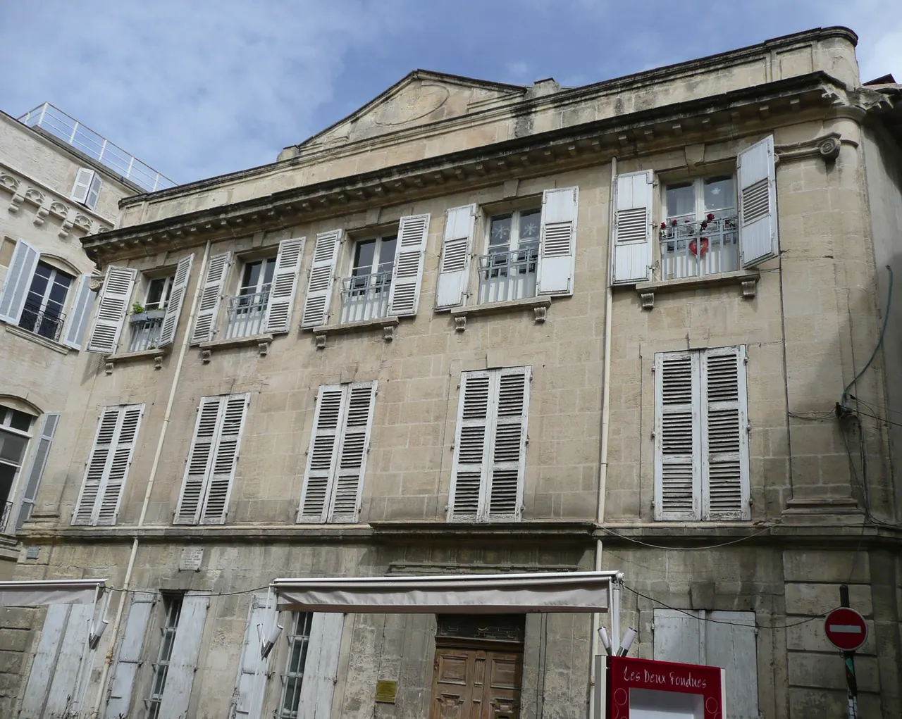

{kind=link}

Carrières des Lumières
높이 15m 거대한 지하 백색 석회암 채석장 동굴 전체를 디지털 캔버스로 변모시킨 세계 최초·최대 규모의 몰입형 미디어 아트 공간. 7,000㎡ 암벽과 바닥을 감싸는 빛과 음악의 향연.

15세기 귀족 저택을 개조해 2014년 개관한 현대 미술 재단. 반 고흐의 혁신적인 예술 세계와 동시대 현대 미술 작가들의 대화, 옥상 테라스의 유리 설치 작품과 수준 높은 아트 북숍.
2014년 15세기 귀족 저택 레오토 드 도닌(Hôtel Léautaud de Donines)을 현대적으로 리노베이션하여 개관한 빈센트 반 고흐 재단 현대 미술관이다.
고흐의 모든 작품을 소장한 전통적인 상설 박물관이 아니라, 암스테르담 반 고흐 미술관이나 오르세 미술관 등에서 기획전마다 반 고흐의 원작 소수를 특별 대여하여 현대 미술가들의 작품과 나란히 전시함으로써 고흐의 예술적 유산이 오늘날 어떻게 살아 숨 쉬는지를 조명한다.
스위스 예술가 라파엘 하이츠(Raphaël Heitz)가 설계한 유리 반사 패널 옥상 테라스와, 프랑스 남부에서 가장 충실한 반 고흐 전문 예술 서적을 갖춘 뮤지엄 북숍이 인상적이다.
"고흐의 대표작 수십 점을 기대하기보다는, 아를이라는 공간에서 고흐의 색채와 빛이 현대 미술과 어떻게 공명하는지를 세련된 공간에서 확인하는 현대적 선택지다." 기획전시 주제와 대여된 고흐 원작을 둘러본 뒤, 옥상 테라스에서 아를의 붉은 지붕들을 감상하고 북숍을 둘러보는 45~60분 실내 관람 코스로 적합하다.
| 항목 | 상세 정보 |
|---|---|
| 위치 | 35ter Rue du Docteur Fanton, 13200 Arles |
| 운영 시간 | 화요일–일요일 10:00–18:00 (월요일 휴관, 기획전 교체기 임시 휴관 확인 필요) |
| 입장료 | 일반 성인 €10.00, 학생 €8.00, 12세 미만 무료 (Pass Monument 미포함, 별도 매표) |
| 도보 연계 | Place du Forum에서 북쪽으로 도보 2분 거리 |
높이 15m 거대한 지하 백색 석회암 채석장 동굴 전체를 디지털 캔버스로 변모시킨 세계 최초·최대 규모의 몰입형 미디어 아트 공간. 7,000㎡ 암벽과 바닥을 감싸는 빛과 음악의 향연.

기원전 6세기 켈트 성소에서 헬레니즘 도시를 거쳐 로마 제국의 온천 휴양도시로 번영했던 거대한 고대 발굴 유적지. 갈리아에서 가장 완벽하게 보존된 기원전 1세기 로마 영묘와 개선문 '레 장티크(Les Antiques)'.

알피유(Alpilles) 산맥 해발 245m 석회암 절벽 위에 우뚝 솟은 중세 독수리 요새 마을. 자연 암반과 성벽이 하나로 결합된 레보 성채(Château des Baux) 폐허와 올리브 계곡 대파노라마.

세계적인 식물학자 파트리크 블랑의 300㎡ 거대한 수직 정원(Mur Végétal) 외벽 아래 40여 개 프로방스 전통 식재료 좌판이 모인 아비뇽의 활기찬 실내 중앙 미식 시장.

14세기 가톨릭 교황청이 로마를 떠나 68년간 머물렀던 서유럽 최대의 중세 고딕 요새 궁전. 베네딕토 12세의 구궁전과 클레멘스 6세의 신궁전, 마테오 조바네티의 프레스코화와 히스토패드 3D 증강현실 복원.

12세기 론(Rhône) 강을 건너 교황령 아비뇽과 프랑스 왕국을 잇던 920m의 유일한 석조 다리. 소빙하기의 거센 홍수로 22개 아치 중 4개와 2층 생니콜라 예배당만 남은 유네스코 세계유산.